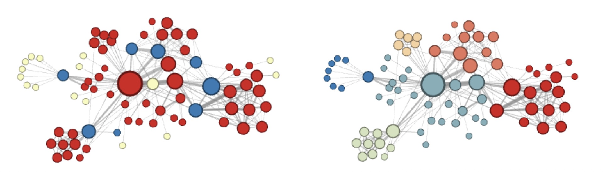

들어가며 (Recap)
지난 강의에서는 임베딩 학습(Learning Embeddings)의 두 핵심 모델을 살펴보았습니다.
- Word2Vec: 단어 시퀀스에서 문맥적 유사성을 학습합니다. 원-핫 벡터를 입력으로 받아 은닉층(hidden layer)에서 저차원 임베딩을 추출하고, 소프트맥스 출력을 통해 문맥 단어를 예측합니다.
- Autoencoder: 인코더–병목(bottleneck)–디코더 구조로 데이터를 압축·재구성합니다. 병목 계층의 표현이 데이터의 핵심 특징을 담습니다.
이번 강의에서는 이러한 임베딩 학습 아이디어를 그래프(graph) 도메인으로 확장합니다. 소셜 네트워크, 추천 시스템, 지식 그래프 등 현실 세계의 많은 데이터가 그래프 형태로 자연스럽게 표현되므로, 그래프 위의 머신러닝은 매우 중요한 연구 영역입니다.
1. 그래프 표현 학습 (Graph Representation Learning)
그래프에서의 태스크 (Tasks in Graphs)
그래프는 다양한 데이터 유형을 일반화할 수 있는 강력한 구조입니다. 이전에 공부한 PageRank(노드 중요도 계산), 근접도(Proximity), 커뮤니티 탐지(Community Detection)를 넘어, 이번에는 머신러닝을 활용한 보다 다양한 태스크를 다룹니다.
노드 분류 (Node Classification)
노드 분류는 그래프의 각 노드에 레이블(label)을 부여하는 태스크입니다.
- 소셜 네트워크에서 사용자의 정치적 성향 식별
- 추천 시스템에서 사용자·아이템의 카테고리 분류
연결된 노드끼리는 비슷한 레이블을 가질 가능성이 높다는 직관이 핵심입니다.

링크 예측 (Link Prediction)
링크 예측은 그래프에 새로운 엣지(edge)가 나타날 가능성을 예측하는 태스크입니다.
- 소셜 네트워크에서의 친구 추천
- Netflix 등 플랫폼에서의 새 영화 추천

그래프의 표현 (Representation of Graphs)
그래프 \(G = (V, E)\)를 머신러닝 모델에 입력하려면 수치적 표현이 필요합니다. 가장 기본적인 방법은 인접 행렬(Adjacency Matrix) \(A \in \{0,1\}^{N \times N}\)을 사용하는 것입니다.
\[A_{ij} = \begin{cases} 1 & \text{노드 } i \text{와 } j \text{가 연결된 경우} \\ 0 & \text{그 외} \end{cases}\]
이때 각 노드 \(i\)는 \(N\)차원 행 벡터 \(\mathbf{a}_i\) (즉, \(A\)의 \(i\)번째 행)로 표현됩니다. 연결된 이웃의 위치에만 1이 위치한 멀티-핫 벡터(multi-hot vector)입니다.

나이브한 표현의 한계 (Limitations of the Naïve Approach)
각 노드 \(i\)를 \(\mathbf{a}_i\)로 표현하면 두 가지 근본적인 문제가 발생합니다.
한계 1 — 고차원성과 희소성: 노드 수 \(N\)이 수백만에 달하는 실제 그래프에서 \(N\)-차원 벡터는 너무 고차원이며, 각 노드가 극히 일부 노드와만 연결되어 있어 벡터 대부분이 0인 극단적인 희소 벡터(sparse vector)가 됩니다.
한계 2 — 인접 행렬의 비유일성: 동일한 그래프도 노드 순서를 바꾸면 서로 다른 인접 행렬이 됩니다.
\[A_1 = \begin{pmatrix} 0 & 1 & 1 \\ 1 & 0 & 0 \\ 1 & 0 & 0 \end{pmatrix}, \quad A_2 = \begin{pmatrix} 0 & 0 & 1 \\ 0 & 0 & 1 \\ 1 & 1 & 0 \end{pmatrix}\]
두 행렬은 원소 구성은 다르지만 동일한 그래프 구조(예: 스타 그래프)를 나타냅니다. 이는 그래프가 노드 순열에 대해 불변(invariant to permutation of nodes)이기 때문입니다. 따라서 \(\mathbf{a}_i\)는 노드의 일관된 특성을 표현하는 데 부적합합니다.
그래프에서의 표현 학습 (Representation Learning in Graphs)
위의 한계를 극복하기 위해 그래프 표현 학습(Graph Representation Learning)은 다음 매핑을 학습하는 것을 목표로 합니다.
- 입력(From): 개별 노드, 부분 그래프(subgraph), 또는 전체 그래프
- 출력(To): 저차원 연속 벡터 공간(embedding space)의 점
- 조건(Such that): 임베딩 공간에서의 기하학적 관계가 원본 그래프의 구조적 유사성을 반영

노드 임베딩 (Node Embeddings)
그래프 표현 학습에서 가장 중요한 것은 노드 임베딩(Node Embedding)입니다. 서브그래프·전체 그래프의 임베딩 역시 노드 임베딩으로부터 구성될 수 있기 때문입니다.
노드 임베딩이 학습되면 다음 태스크에 활용됩니다.
- 커뮤니티 탐지: 임베딩 기반 클러스터링
- 노드 분류: 노드 \(v\)의 레이블을 \(\phi(\mathbf{z}_v)\)로 예측
- 링크 예측: 엣지 \((u, v)\)의 존재 여부를 \(f(\mathbf{z}_u, \mathbf{z}_v)\)로 예측 (임베딩 연결(concatenate) 또는 거리 계산)
예시: 자카리 가라테 클럽 네트워크
노드 임베딩의 강력함을 보여주는 고전적 예시가 자카리 가라테 클럽(Zachary’s Karate Club) 네트워크입니다. 34개의 노드로 구성된 이 네트워크에서 각 노드는 원래 34차원 희소 벡터로 표현됩니다. DeepWalk를 적용하면, 단 2차원으로 압축하더라도 실제 커뮤니티(색상으로 표시)가 임베딩 공간에서 뚜렷하게 분리됩니다.

문제 공식화 (Problem Formulation)
그래프 \(G = (V, E)\)가 주어졌을 때 (\(V\): 노드 집합, \(E\): 엣지 집합, 인접 행렬 \(A\)와 동치), 각 노드 \(i \in V\)에 대해 임베딩 벡터 \(\mathbf{z}_i \in \mathbb{R}^d\)를 학습하는 것이 목표입니다.
단, 아래 조건을 만족해야 합니다.
\[\text{similarity}(u, v) \approx \mathbf{z}_v^\top \mathbf{z}_u\]
즉, 임베딩 공간에서의 유사도가 원본 네트워크에서의 유사도를 잘 근사해야 합니다.

핵심 구성요소 (Key Components)
문제를 완성하기 위해 두 요소를 정의해야 합니다.
- 인코더(Encoder): \(\text{ENC}(i)\) — 각 노드를 임베딩으로 변환하는 함수
- 유사도 함수(Similarity Function): 원본 네트워크에서 두 노드의 유사성을 측정하는 기준
특히 유사도 함수를 어떻게 정의하는지가 각 알고리즘(DeepWalk, Node2vec 등)의 핵심 차별점입니다.
\[\text{Goal:} \quad \underbrace{\text{similarity}(u, v)}_{\text{원본 네트워크에서의 유사도 (정의 필요!)}} \approx \underbrace{\mathbf{z}_v^\top \mathbf{z}_u}_{\text{임베딩 유사도}}\]

왜 내적(Dot Product)인가?
임베딩 유사도 측도로 내적(dot product)을 선택하는 이유를 살펴보겠습니다.
- 내적 \(\mathbf{z}_u^\top \mathbf{z}_v\)는 두 벡터 사이의 비정규화(unnormalized) 유사도입니다.
- 코사인 유사도는 \(\frac{\mathbf{z}_u^\top \mathbf{z}_v}{\|\mathbf{z}_u\| \|\mathbf{z}_v\|}\)이므로, \(\mathbf{z}_u^\top \mathbf{z}_v\)가 크다는 것은 두 벡터가 같은 방향을 가리킨다는 의미입니다.
- 장점: 행렬 곱셈으로 효율적으로 구현 가능합니다.
- 단점: 벡터의 크기(scale)에 민감합니다. 단, 임베딩들의 스케일이 유사하다면 실용적으로 큰 문제가 없습니다.
임베딩 룩업 (Embedding Lookup)
가장 단순한 인코더는 임베딩 룩업(Embedding Lookup) 방식입니다. 각 노드에 고유한 임베딩 벡터를 직접 할당합니다.
\[\text{ENC}(i) = \mathbf{Z} \cdot \mathbf{1}_i\]
- \(\mathbf{Z} \in \mathbb{R}^{d \times N}\): 전체 노드의 임베딩 행렬. \(j\)번째 열이 노드 \(j\)의 임베딩 \(\mathbf{z}_j\)
- \(\mathbf{1}_i \in \{0,1\}^N\): 노드 \(i\)에 대응하는 원-핫 벡터
행렬-벡터 곱 \(\mathbf{Z} \cdot \mathbf{1}_i\)는 \(\mathbf{Z}\)의 \(i\)번째 열을 추출하므로, 결과적으로 \(\mathbf{z}_i\)를 반환합니다. Word2Vec과 마찬가지로 각 노드에 고유한 벡터를 할당하는 방식이며, 학습 과정에서 \(\mathbf{Z}\)의 원소들이 업데이트됩니다.
2. DeepWalk
동기 (Motivation)
핵심 질문으로 돌아오겠습니다: 그래프에서 두 노드 간의 유사도를 어떻게 정의할까요?
Word2Vec은 두 단어 \(u\)와 \(v\)가 유사하다는 조건으로, 문장 내에서 \(k\)-윈도우(window) 안에 함께 등장하는지 여부를 사용했습니다.
DeepWalk의 핵심 착안점은 다음과 같습니다.
랜덤 워크(random walk)로 생성한 노드 시퀀스를 문장처럼 취급하면 어떨까?
랜덤 워커가 방문하는 노드 시퀀스 \(v_1, v_2, \ldots, v_l\)을 하나의 “문장”으로 보고, 노드 \(v_i\)와 \(v_j\)가 랜덤 워크 내 \(k\)-스텝 이내에 함께 등장하면 유사하다고 정의하는 것입니다.
왜 랜덤 워크인가? (Why Random Walks?)
DeepWalk는 Word2Vec을 그래프로 일반화한 방법입니다.
핵심 아이디어:
\[\mathbf{z}_u^\top \mathbf{z}_v \propto \text{랜덤 워크에서 } u \text{와 } v \text{가 함께 등장하는 빈도}\]
두 노드 \(u\)와 \(v\)가 랜덤 워크에서 함께 자주 나타난다는 것은 두 가지 의미를 동시에 포함합니다.
- \(u\)와 \(v\)가 그래프 상에서 가깝다 (\(k\)-hop 이내)
- \(u\)와 \(v\)가 강하게 연결되어 있다 (공통 이웃이 많다)
또한, 모든 노드 쌍에 대해 근접도를 직접 계산하는 것보다 훨씬 효율적입니다.
특징 학습을 최적화 문제로 보기 (Feature Learning as Optimization)
그래프 \(G = (V, E)\)가 주어졌을 때, 임베더(embedder) \(f: V \to \mathbb{R}^d\)를 학습하는 목표는 다음과 같이 정형화됩니다.
노드 \(u\)의 임베딩 \(\mathbf{z}_u\)가 자신의 랜덤 워크 이웃 \(\mathcal{N}_R(u)\)를 잘 예측하도록
이를 최대 우도 추정(Maximum Likelihood Estimation)으로 표현하면:
\[\max_{f} \sum_{u \in V} \log P\!\bigl(\mathcal{N}_R(u) \mid \mathbf{z}_u\bigr)\]
여기서 \(\mathcal{N}_R(u)\)는 랜덤 워커 \(R\)이 노드 \(u\)에서 시작하여 방문한 이웃 집합입니다.
랜덤 워크 최적화 (Random Walk Optimization)
목적함수를 구체화하기 위해 두 가지 가정을 도입합니다.
① 조건부 독립(Conditional Independence)
이웃 노드를 하나 관찰하는 사건이 다른 이웃 노드를 관찰하는 사건과 독립이라고 가정합니다.
\[\log P\!\bigl(\mathcal{N}_R(u) \mid \mathbf{z}_u\bigr) = \sum_{v \in \mathcal{N}_R(u)} \log P(v \mid \mathbf{z}_u)\]
② 소프트맥스 파라미터화(Softmax Parameterization)
노드 \(u\)가 주어졌을 때 이웃 노드로 \(v\)가 등장할 조건부 확률을 \(N\)-클래스 소프트맥스로 표현합니다.
\[P(v \mid \mathbf{z}_u) = \frac{\exp(\mathbf{z}_u^\top \mathbf{z}_v)}{\sum_{n \in V} \exp(\mathbf{z}_u^\top \mathbf{z}_n)}\]
전체 노드 집합 \(V\) 중에서 \(v\)가 \(u\)의 이웃으로 등장할 상대적 확률을 내적 기반으로 계산하는 방식입니다.
특징 공간의 대칭성 (Symmetry in Feature Space)
Word2Vec에서는 입력 임베딩 행렬 \(\mathbf{W}\)와 출력 임베딩 행렬 \(\mathbf{W}'\) 두 개를 별도로 학습합니다.
\[p_{ij} = \text{softmax}_j\!\bigl({\mathbf{W}'}^\top \mathbf{W} \mathbf{1}_i\bigr)\]
반면, DeepWalk에서는 단일 임베딩 행렬 \(\mathbf{Z} \in \mathbb{R}^{d \times N}\)만을 사용합니다.
\[p_{ij} = \text{softmax}_j\!\bigl(\mathbf{Z}^\top \mathbf{Z} \mathbf{1}_i\bigr)\]
이는 입력 임베딩과 출력 임베딩이 동일하다고 가정하는 것으로, 두 가지 장점이 있습니다.
- 장점 1: \(p_{ij} \propto \mathbf{z}_i^\top \mathbf{z}_j\)로 직접 해석 가능합니다. 임베딩의 내적이 유사도를 직접 나타냅니다.
- 장점 2: 파라미터 수가 절반으로 줄어 불필요한 중복이 제거됩니다 (\(2dN \to dN\)).
목적 함수 (Objective Function)
모든 요소를 결합하면 최종 손실 함수(loss function)가 완성됩니다.
\[\mathcal{L} = \sum_{u \in V} \sum_{v \in \mathcal{N}_R(u)} -\log \left( \frac{\exp(\mathbf{z}_u^\top \mathbf{z}_v)}{\sum_{n \in V} \exp(\mathbf{z}_u^\top \mathbf{z}_n)} \right)\]
각 항의 의미를 분해하면:
- \(\displaystyle\sum_{u \in V}\): 전체 노드 \(u\)에 대한 합산
- \(\displaystyle\sum_{v \in \mathcal{N}_R(u)}\): \(u\)에서 시작하는 랜덤 워크에서 방문한 노드 \(v\)에 대한 합산
- \(\dfrac{\exp(\mathbf{z}_u^\top \mathbf{z}_v)}{\sum_{n \in V} \exp(\mathbf{z}_u^\top \mathbf{z}_n)}\): \(u\)에서 시작하는 랜덤 워크에서 \(v\)가 등장할 예측 확률
이 손실함수를 최소화하는 것은 랜덤 워크 이웃 노드들의 임베딩 내적을 최대화하는 것과 동치입니다.
계산 비용과 해결책 (Computational Cost)
위 목적 함수의 계산 비용은 \(O(|V|^2)\) 입니다. 소프트맥스 분모인 \(\sum_{n \in V} \exp(\mathbf{z}_u^\top \mathbf{z}_n)\) 계산 시 모든 노드를 참조하기 때문입니다. Facebook과 같이 수십억 개의 노드를 갖는 그래프에서는 이 비용이 감당 불가능(intractable)합니다.
이를 해결하는 세 가지 방법을 살펴보겠습니다.
해결책 1: 정규화 항 제거 (No Normalization)
분모(정규화 항)를 완전히 제거하면 손실이 단순화됩니다.
\[\mathcal{L} = \sum_{u \in V} \sum_{v \in \mathcal{N}_R(u)} -\log \exp(\mathbf{z}_u^\top \mathbf{z}_v) = -\sum_{u \in V} \sum_{v \in \mathcal{N}_R(u)} \mathbf{z}_u^\top \mathbf{z}_v\]
- 목표 달성 여부: 손실을 최소화하면 \(\mathbf{z}_u^\top \mathbf{z}_v\)가 최대화되므로, 표면적으로는 목표에 부합합니다.
- 문제점: 자명해(trivial solution)가 존재합니다. 모든 임베딩을 동일한 상수 벡터로 설정하면 손실이 최소화되므로, 의미 있는 구조를 학습하지 못합니다.
해결책 2: 계층적 소프트맥스 (Hierarchical Softmax)
아이디어: \(N\)-클래스 분류 \(\approx\) \(\log N\)번의 이진 분류
모든 노드를 이진 트리의 잎(leaf)으로 배치하면, 특정 잎 노드 \(v\)에 이르는 경로 \(\pi(v)\)의 길이가 \(O(\log N)\)이 됩니다. 각 내부 노드에서 이진 분류를 수행하여 소프트맥스를 근사합니다.
알고리즘:
- 모든 노드를 잎으로 하는 이진 트리를 구성합니다 (무작위 또는 빈도 기반).
- 각 목표 노드 \(v\)에 대해 루트에서 \(v\)까지의 경로 \(\pi(v)\)를 탐색합니다.
- 경로상의 각 분기점 \(l\)에서 이진 분류를 수행하여 다음 손실을 최소화합니다.
\[\mathcal{L} = \sum_{u \in V} \sum_{v \in \mathcal{N}_R(u)} \sum_{l \in \pi(v)} -\log \frac{\exp(\mathbf{z}_u^\top \mathbf{z}_l)}{\exp(\mathbf{z}_u^\top \mathbf{z}_l) + \exp(\mathbf{z}_u^\top \mathbf{z}_{l'})}\]
여기서 \(l'\)는 현재 분기점 \(l\)에서 반대 방향의 노드입니다. 이 방식은 계산 비용을 \(O(|V|^2) \to O(|V| \log |V|)\)로 줄여줍니다.

해결책 3: 네거티브 샘플링 (Negative Sampling)
소프트맥스 정규화의 목적은 이웃이 아닌 노드들에 대한 내적 \(\mathbf{z}_u^\top \mathbf{z}_n\)을 줄이는 것입니다. 전체 노드를 참조하는 대신, \(k\)개의 네거티브 샘플만으로 정규화를 근사할 수 있습니다.
\[\log \frac{\exp(\mathbf{z}_u^\top \mathbf{z}_v)}{\sum_{n \in V} \exp(\mathbf{z}_u^\top \mathbf{z}_n)} \approx \log \sigma(\mathbf{z}_u^\top \mathbf{z}_v) - \sum_{i=1}^{k} \log \sigma(\mathbf{z}_u^\top \mathbf{z}_{n_i})\]
각 기호의 의미:
- \(\sigma(\cdot)\): 시그모이드 함수 \(\sigma(x) = \frac{1}{1 + e^{-x}}\)
- \(n_i\): 그래프에서 무작위로 샘플링된 네거티브 노드 (이웃이 아닌 노드)
- \(k\): 네거티브 샘플의 수 (각 쌍당 기여도의 상한)
네거티브 샘플 선택 방법:
- 노드의 차수(degree)에 비례하여 샘플링합니다.
- 이유: 고차도 노드는 랜덤 워크에 더 자주 등장하여 실제 비이웃 관계를 더 잘 대표하기 때문입니다.
\(k\) 값 결정 시 고려 사항:
- \(k\)가 클수록 추정은 더 정확하지만, 계산 비용도 증가합니다.
- 실제로는 \(k \in [5, 20]\) 범위가 자주 사용됩니다.
3. Node2vec
동기 (Motivation)
DeepWalk의 단순한 랜덤 워크는 동질성(homophily) — 연결된 노드들이 비슷하다 — 만을 포착합니다. 그런데 그래프에는 또 다른 유형의 유사성이 있습니다.
관찰: 물리적으로 멀리 떨어진 노드도 역할(structural role) 의 관점에서는 매우 유사할 수 있습니다.
예를 들어, 항공 네트워크에서 서로 다른 대륙의 대형 허브 공항들은 위치는 멀지만 “허브”라는 구조적 역할은 동일합니다. 반면 작은 지역 공항들끼리도 “소형 공항”이라는 역할을 공유합니다. 단순한 랜덤 워크(DeepWalk)는 국소적 이웃 구조만을 탐색하므로, 이러한 구조적 동등성(structural equivalence)을 포착하지 못합니다.

Node2vec 개요 (Overview)
Node2vec의 핵심 아이디어는 랜덤 워크를 유연하고 편향되게(flexible and biased) 만드는 것입니다.
그래프 탐색 방법으로 잘 알려진 두 전략을 활용합니다.
- BFS(너비 우선 탐색, Breadth-First Search): 현재 위치에서 가까운 노드부터 방문
- DFS(깊이 우선 탐색, Depth-First Search): 한 방향으로 깊게 파고들며 방문
Node2vec에서는 랜덤 워커가 BFS 또는 DFS 방향으로 편향되도록 제어하며, 이 편향의 정도를 하이퍼파라미터로 조정합니다.

Node2vec와 DFS
DFS(깊이 우선 탐색)는 그래프를 트리처럼 따라가며 멀리 이동합니다.
DFS 방식으로 샘플링된 이웃 \(\mathcal{N}_{\text{DFS}}(u) = [s_4, s_5, s_6]\)을 사용하면:
- 진행 방향(outgoing direction)으로 이동하는 랜덤 워크와 유사
- 인접한 노드들이 비슷한 임베딩을 갖게 됩니다 (DeepWalk와 유사)
- 즉, 지역적 이웃 구조(homophily)를 포착
Node2vec와 BFS
BFS(너비 우선 탐색)는 현재 노드 주변의 가까운 노드를 우선 방문합니다.
BFS 방식으로 샘플링된 이웃 \(\mathcal{N}_{\text{BFS}}(u) = [s_1, s_2, s_3]\)을 사용하면:
- 단순 랜덤 워크와 달리 먼 노드도 이웃으로 포함 가능
- 비슷한 구조적 역할을 가진 노드들이 유사한 임베딩을 갖게 됩니다
- 즉, 구조적 동등성(structural equivalence)을 포착
편향된 랜덤 워크 (Biased Random Walks)
워커가 노드 \(s_1\)에서 노드 \(w\)로 이동한 상황을 가정합니다. 다음 방문지의 후보는 \(s_1\)(되돌아가기), \(s_2\)(같은 거리), \(s_3\)(더 먼 노드) 세 가지입니다.
- \(s_2\): \(s_1\)과 같은 거리(distance 1)에 위치 — BFS 방향
- \(s_3\): \(s_1\)보다 더 먼 거리(distance 2)에 위치 — DFS 방향
- \(s_1\): 이전 노드로 복귀(distance 0)
편향 제어 = 이들 각각으로 이동할 확률을 결정하는 것입니다.

BFS와 DFS 사이의 보간 (Interpolating BFS and DFS)
Node2vec는 두 하이퍼파라미터 \(p\)와 \(q\)로 BFS-DFS 편향을 조절합니다.
① 복귀 파라미터 \(p\) (Return Parameter):
- 이전 노드로 되돌아갈 비정규화 확률: \(\propto 1/p\)
- \(p\)가 작을수록 워커가 이전 노드 근처에 머물러 국소 탐색 강화
② 진출-진입 파라미터 \(q\) (In-Out Parameter):
- 이전 노드와 같은 거리 노드로 이동할 확률: \(\propto 1\) (BFS 경향)
- 이전 노드보다 더 먼 노드로 이동할 확률: \(\propto 1/q\) (DFS 경향)
- 직관: \(q\)는 BFS 대 DFS의 “비율(ratio)”을 제어합니다.
전이 확률을 형식적으로 정리하면, 워커가 \(t\)에서 \(w\)로 이동한 뒤 \(x\)로 이동하는 비정규화 전이 확률 \(\alpha_{pq}(t, x)\)는:
\[\alpha_{pq}(t, x) = \begin{cases} 1/p & \text{if } d(t, x) = 0 \quad (\text{이전 노드로 복귀}) \\ 1 & \text{if } d(t, x) = 1 \quad (\text{같은 거리, BFS 방향}) \\ 1/q & \text{if } d(t, x) = 2 \quad (\text{더 먼 노드, DFS 방향}) \end{cases}\]
여기서 \(d(t, x)\)는 이전 노드 \(t\)와 후보 노드 \(x\) 사이의 최단 거리입니다.
확률 표로 정리하면:
| 타겟 \(t\) | 비정규화 확률 | \(d(s_1, t)\) |
|---|---|---|
| \(s_1\) | \(1/p\) | 0 |
| \(s_2\) | \(1\) | 1 |
| \(s_3\) | \(1/q\) | 2 |
| \(s_4\) | \(1/q\) | 2 |
세 가지 극단적 시나리오로 직관을 얻을 수 있습니다.
| 조건 | 탐색 패턴 | 경향 |
|---|---|---|
| \(p \gg 1\), \(q \gg 1\) | 삼각형 순환: \((s_2, s_1, w, s_2, \ldots)\) | 강한 BFS (지역 탐색) |
| \(p \gg 1\), \(q \ll 1\) | 바깥으로 진행: \((s_3, s_5, s_6, s_7, \ldots)\) | 강한 DFS (전역 탐색) |
| \(p \ll 1\), \(q \ll 1\) | 트리처럼 이동: \((s_3, w, s_4, w, s_1, w, \ldots)\) | 광범위한 BFS |

Node2vec 알고리즘
Node2vec의 전체 학습 알고리즘은 다음과 같습니다.
# Node2vec Algorithm
Z ← 노드 임베딩 초기화
for each node u in V: # 루트 노드 u
N_R(u) ← p, q 로 편향된 랜덤 워크로 u의 이웃 집합 샘플링
for each node v in N_R(u): # 타겟 노드 v
for each node s around v in N_R(u): # 소스 노드 s
Z ← Z - η · ∇_Z L(u, v) # u와 v 간 손실로 임베딩 업데이트- 먼저 임베딩 행렬 \(\mathbf{Z}\)를 무작위로 초기화합니다.
- 각 노드 \(u\)에 대해 파라미터 \(p\), \(q\)로 편향된 랜덤 워크를 수행하여 이웃 집합 \(\mathcal{N}_R(u)\)를 생성합니다.
- 이웃 집합 내 각 노드 쌍 \((u, v)\)에 대해 손실 \(\mathcal{L}(u, v)\)를 계산하고, 학습률 \(\eta\)로 경사 하강법 업데이트를 수행합니다.
요약 (Summary)
이번 강의의 핵심 내용을 정리합니다.
1. 그래프 표현 학습 (Graph Representation Learning)
- 나이브한 인접 행렬 표현의 한계: 고차원 희소성, 노드 순열에 대한 비유일성
- 목표: 임베딩 공간의 내적 \(\mathbf{z}_v^\top \mathbf{z}_u\)가 원본 그래프의 similarity\((u, v)\)를 근사하도록 임베딩 행렬 \(\mathbf{Z}\)를 학습
- 노드 임베딩은 커뮤니티 탐지·노드 분류·링크 예측 등 다양한 태스크에 활용 가능
2. DeepWalk
- Word2Vec의 그래프 일반화: 랜덤 워크 시퀀스를 “문장”으로 취급
- MLE 기반 목적함수: 랜덤 워크 이웃 노드들의 조건부 로그 우도 최대화
- 계산 비용 감소 기법 세 가지:
- 정규화 제거 → 자명해 문제로 사용 불가
- 계층적 소프트맥스 → \(O(|V|^2)\) 에서 \(O(|V| \log |V|)\)로 개선
- 네거티브 샘플링 → \(k \in [5, 20]\) 범위의 샘플로 근사
3. Node2vec
- DeepWalk 한계 극복: 지역 인접성(homophily)에 더하여 구조적 동등성(structural equivalence) 포착
- 파라미터 \(p\)(복귀 경향)·\(q\)(BFS/DFS 비율)로 탐색 전략을 유연하게 제어
- 비정규화 전이 확률 \(\alpha_{pq}(t, x)\): 이전 노드와의 거리 0·1·2에 따라 \(1/p\)·\(1\)·\(1/q\) 할당